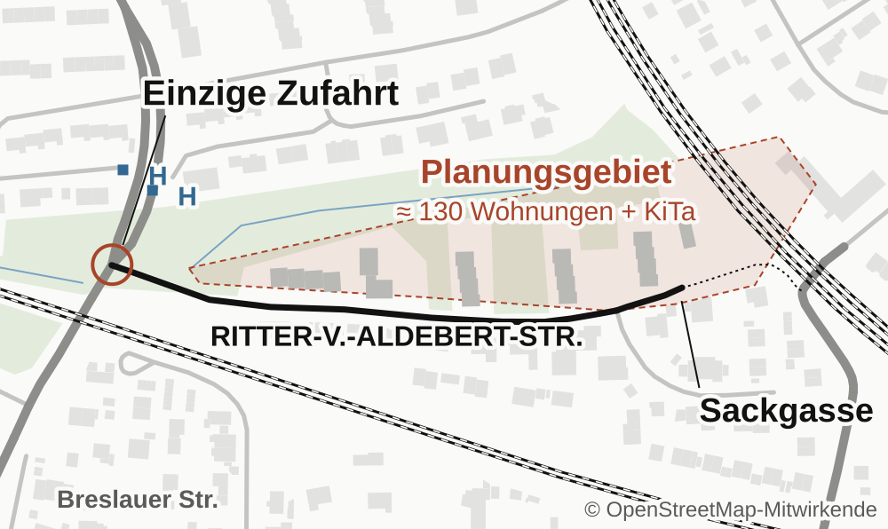

130 Wohnungen, eine Zufahrt
An der Ritter-von-Aldebert-Straße soll ein neues Wohnquartier entstehen – über eine einzige, schmale Zufahrt. Was geplant ist, was in den Plänen fehlt und mit welchen sieben Forderungen Sie sich jetzt bei der Stadt melden können.
